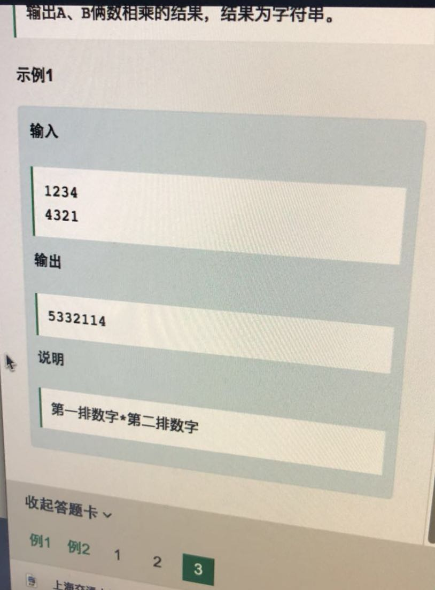

☰ 目录
20180410 大数相乘

原理链接： https://itimetraveler.github.io/2017/08/22/%E3%80%90%E7%AE%97%E6%B3%95%E3%80%91%E5%A4%A7%E6%95%B0%E7%9B%B8%E4%B9%98%E9%97%AE%E9%A2%98%E5%8F%8A%E5%85%B6%E9%AB%98%E6%95%88%E7%AE%97%E6%B3%95/
另一个python 代码的原文链接： https://pythonandr.com/2015/10/13/karatsuba-multiplication-algorithm-python-code/
原文链接：http://lehoangvan.com/karatsuba-cpp/
This is my implementation of Karatsuba recursive multiplication algorithm for Stanford’s MOOC course on algorithm design and analysis. Since C++ doesn’t support big integer arithmetics natively, I had to use std::strings to represent arbitrary-precision integers. The utility functions add(string lhs, string rhs) and subtract(string lhs, string rhs) implement the addition and subtraction, respectively, of large integers and the Karatsuba method is given by multiply(string lhs, string rhs).
#include <iostream>
#include <string>
#define max(a,b) ((a) > (b) ? (a) : (b))
using namespace std;
string add(string lhs, string rhs) {
int length = max(lhs.size(), rhs.size());
int carry = 0;
int sum_col;
string result;
while (lhs.size() < length)
lhs.insert(0,"0");
while (rhs.size() < length)
rhs.insert(0,"0");
for (int i = length-1; i >= 0; i--) {
sum_col = (lhs[i]-'0') + (rhs[i]-'0') + carry;
carry = sum_col/10;
result.insert(0,to_string(sum_col % 10));
}
if (carry)
result.insert(0,to_string(carry));
return result.erase(0, min(result.find_first_not_of('0'), result.size()-1));
}
string subtract(string lhs, string rhs) {
int length = max(lhs.size(), rhs.size());
int diff;
string result;
while (lhs.size() < length)
lhs.insert(0,"0");
while (rhs.size() < length)
rhs.insert(0,"0");
for (int i = length-1; i >= 0; i--) {
diff = (lhs[i]-'0') - (rhs[i]-'0');
if (diff >= 0)
result.insert(0, to_string(diff));
else {
int j = i - 1;
while (j >= 0) {
lhs[j] = ((lhs[j]-'0') - 1) % 10 + '0';
if (lhs[j] != '9')
break;
else
j--;
}
result.insert(0, to_string(diff+10));
}
}
return result.erase(0, min(result.find_first_not_of('0'), result.size()-1));
}
string multiply(string lhs, string rhs) {
int length = max(lhs.size(), rhs.size());
while (lhs.size() < length)
lhs.insert(0,"0");
while (rhs.size() < length)
rhs.insert(0,"0");
if (length == 1)
return to_string((lhs[0]-'0')*(rhs[0]-'0'));
string lhs0 = lhs.substr(0,length/2);
string lhs1 = lhs.substr(length/2,length-length/2);
string rhs0 = rhs.substr(0,length/2);
string rhs1 = rhs.substr(length/2,length-length/2);
string p0 = multiply(lhs0,rhs0);
string p1 = multiply(lhs1,rhs1);
string p2 = multiply(add(lhs0,lhs1),add(rhs0,rhs1));
string p3 = subtract(p2,add(p0,p1));
for (int i = 0; i < 2*(length-length/2); i++)
p0.append("0");
for (int i = 0; i < length-length/2; i++)
p3.append("0");
string result = add(add(p0,p1),p3);
return result.erase(0, min(result.find_first_not_of('0'), result.size()-1));
}
int main() {
string s1, s2;
cin >> s1 >> s2;
cout << multiply(s1,s2) << endl;
return 0;
}